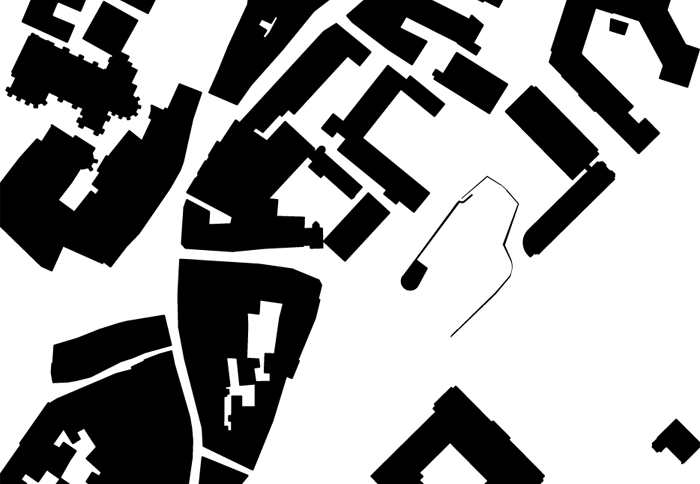
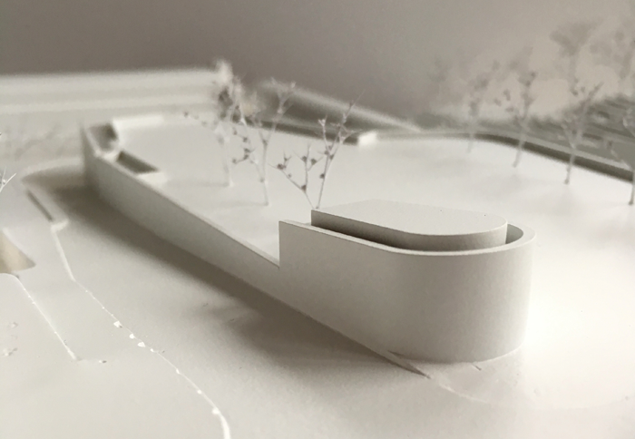
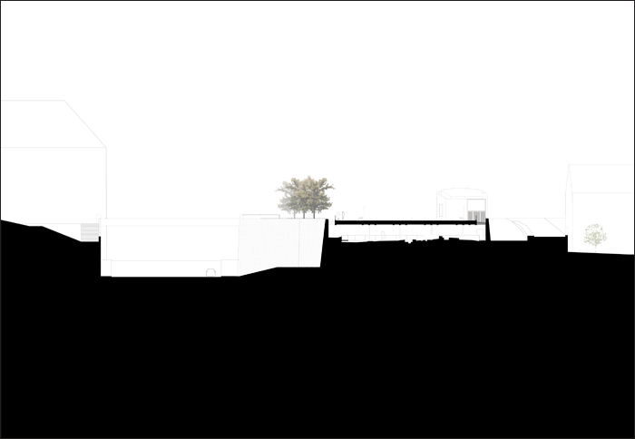
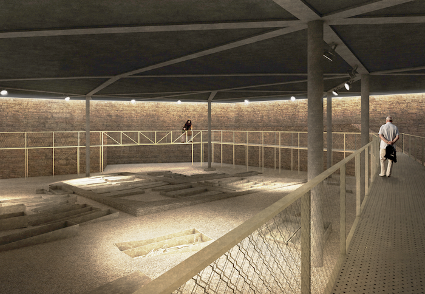

Projet: BASTION ST-ANTOINE GENÈVE, 5ème prix








Projet: BASTION ST-ANTOINE GENÈVE, 5ème prix
Lieu: Genève (GE)
Client: Ville de Genève
Programme: Mise en valeur du site archéologique et aménagement de la place
Budget: 12’000’000 CHF
Date: 2016
Type: Concours ouvert, 5ème prix
Team: NYX architectes, Westpol, Bâle (architectes paysagers), Rapp Infra AG, Münchenstein (ingénieurs civils)
Images: NYX architectes